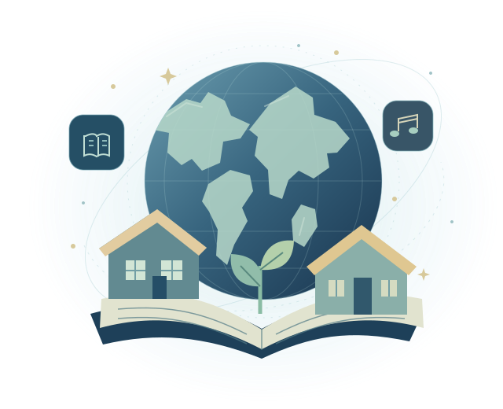

Fé que inspira. Cuidado que aproxima.
Ideias que se tornam
caminhos de cuidado.
Educação, solidariedade e tecnologia a serviço das pessoas. Conheça o que estamos planejando e encontre uma ideia com a qual você se identifica.
Explorar as propostas
Conhecer. Aprender. Cuidar.Um propósito, muitas formas de servir.
ENCONTRE SEU PONTO DE CONEXÃO
Um propósito. Muitas possibilidades.
Explore por área e conheça o objetivo e a situação de cada proposta.
Carregando propostas…
Portfólio em construçãoDO PROPÓSITO À PRÁTICA
Como uma ideia pode ganhar vida
Planejar é o primeiro passo. Antes de oferecer uma atividade, precisamos conhecer o contexto e preparar as condições para realizá-la.
Escutar e compreender
Pessoas, necessidades e possibilidades do território.
Construir e revisar
Materiais, recursos, acessibilidade e responsabilidades.
Realizar e acompanhar
Atividades confirmadas, aprendizado e transparência.
CONSTRUIR EM COMUNIDADE
Sua experiência pode abrir caminhos.
Tem conhecimento, uma sugestão ou vontade de colaborar? Vamos conversar sobre o que é possível construir juntos.